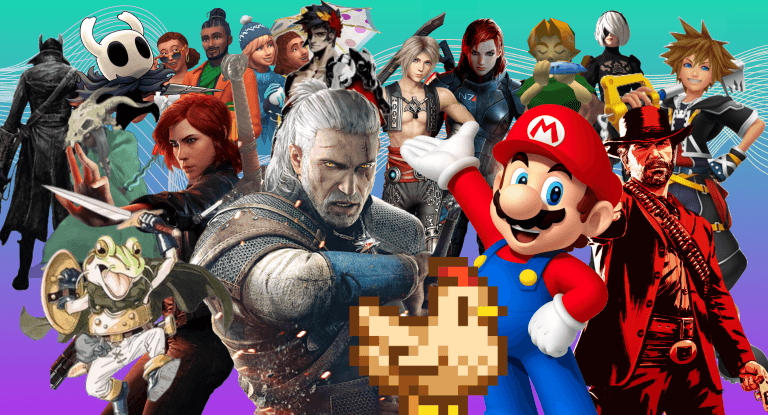
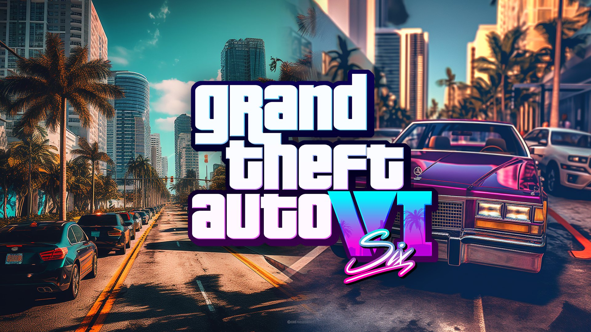

Algunos videojuegos han marcado generaciones gracias a sus historias, gráficos, jugabilidad y comunidades gigantes.

Muchos jugadores esperan lanzamientos como GTA VI, nuevos títulos de terror, shooters competitivos y juegos de mundo abierto.
